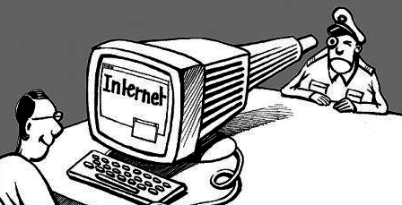

The internet is by no means a safe place. At any given moment, hackers are trying to steal personal and sensitive information. Keeping our computer systems secure is a big task, and our best computer scientists and software engineers struggle to keep up with the onslaught of new threats. As more and more sensitive information is handled online, hackers find bigger and bigger targets, such as elections. Many nations are transitioning to electronic voting systems, but without proper security measures in place, democracy is at stake. Possibly one of the most well-known instances of hackers targeting an electronic voting system is that of the 2016 American election. The big push for electronic voting has progressed faster than the security systems designed to protect them. If the proper security measures cannot be put in place to protect an election from outside attacks, it would be best to return to the old paper ballot system. Technological advances are a good thing, but computer security systems need to be developed alongside our new technologies in order to keep them safe.
Privacy Issues and Technology
